Operations
This is the report template for the exam. Please only remove the text formatted as with three dashes in front and behind
like:
--- question 1 fill here ---
Where you instead should add your answers. Any other changes may have unwanted consequences when your report is
auto-generated at the end of the course. For questions where you are asked to include images, start by adding the image
to the figures subfolder (please only use .png, .jpg or .jpeg) and then add the following code in your answer:

In addition to this markdown file, we also provide the report.py script that provides two utility functions:
Running:
python report.py html
Will generate a .html page of your report. After the deadline for answering this template, we will auto-scrape
everything in this reports folder and then use this utility to generate a .html page that will be your serve
as your final hand-in.
Running
python report.py check
Will check your answers in this template against the constraints listed for each question e.g. is your answer too
short, too long, or have you included an image when asked. For both functions to work you mustn't rename anything.
The script has two dependencies that can be installed with
pip install typer markdown
or
uv add typer markdown
Overall project checklist
The checklist is exhaustive which means that it includes everything that you could do on the project included in the
curriculum in this course. Therefore, we do not expect at all that you have checked all boxes at the end of the project.
The parenthesis at the end indicates what module the bullet point is related to. Please be honest in your answers, we
will check the repositories and the code to verify your answers.
Week 1
- [x] Create a git repository (M5)
- [x] Make sure that all team members have write access to the GitHub repository (M5)
- [x] Create a dedicated environment for you project to keep track of your packages (M2)
- [x] Create the initial file structure using cookiecutter with an appropriate template (M6)
- [x] Fill out the
data.pyfile such that it downloads whatever data you need and preprocesses it (if necessary) (M6) - [x] Add a model to
model.pyand a training procedure totrain.pyand get that running (M6) - [x] Remember to either fill out the
requirements.txt/requirements_dev.txtfiles or keeping your
pyproject.toml/uv.lockup-to-date with whatever dependencies that you are using (M2+M6) - [x] Remember to comply with good coding practices (
pep8) while doing the project (M7) - [x] Do a bit of code typing and remember to document essential parts of your code (M7)
- [x] Setup version control for your data or part of your data (M8)
- [x] Add command line interfaces and project commands to your code where it makes sense (M9)
- [x] Construct one or multiple docker files for your code (M10)
- [x] Build the docker files locally and make sure they work as intended (M10)
- [x] Write one or multiple configurations files for your experiments (M11)
- [x] Used Hydra to load the configurations and manage your hyperparameters (M11)
- [x] Use profiling to optimize your code (M12)
- [x] Use logging to log important events in your code (M14)
- [x] Use Weights & Biases to log training progress and other important metrics/artifacts in your code (M14)
- [x] Consider running a hyperparameter optimization sweep (M14)
- [x] Use PyTorch-lightning (if applicable) to reduce the amount of boilerplate in your code (M15)
Week 2
- [x] Write unit tests related to the data part of your code (M16)
- [x] Write unit tests related to model construction and or model training (M16)
- [x] Calculate the code coverage (M16)
- [x] Get some continuous integration running on the GitHub repository (M17)
- [ ] Add caching and multi-os/python/pytorch testing to your continuous integration (M17)
- [x] Add a linting step to your continuous integration (M17)
- [x] Add pre-commit hooks to your version control setup (M18)
- [ ] Add a continues workflow that triggers when data changes (M19)
- [ ] Add a continues workflow that triggers when changes to the model registry is made (M19)
- [x] Create a data storage in GCP Bucket for your data and link this with your data version control setup (M21)
- [x] Create a trigger workflow for automatically building your docker images (M21)
- [x] Get your model training in GCP using either the Engine or Vertex AI (M21)
- [x] Create a FastAPI application that can do inference using your model (M22)
- [ ] Deploy your model in GCP using either Functions or Run as the backend (M23)
- [x] Write API tests for your application and setup continues integration for these (M24)
- [x] Load test your application (M24)
- [ ] Create a more specialized ML-deployment API using either ONNX or BentoML, or both (M25)
- [x] Create a frontend for your API (M26)
Week 3
- [ ] Check how robust your model is towards data drifting (M27)
- [ ] Setup collection of input-output data from your deployed application (M27)
- [ ] Deploy to the cloud a drift detection API (M27)
- [ ] Instrument your API with a couple of system metrics (M28)
- [ ] Setup cloud monitoring of your instrumented application (M28)
- [ ] Create one or more alert systems in GCP to alert you if your app is not behaving correctly (M28)
- [ ] If applicable, optimize the performance of your data loading using distributed data loading (M29)
- [ ] If applicable, optimize the performance of your training pipeline by using distributed training (M30)
- [ ] Play around with quantization, compilation and pruning for you trained models to increase inference speed (M31)
Extra
- [x] Write some documentation for your application (M32)
- [ ] Publish the documentation to GitHub Pages (M32)
- [x] Revisit your initial project description. Did the project turn out as you wanted?
- [x] Create an architectural diagram over your MLOps pipeline
- [x] Make sure all group members have an understanding about all parts of the project
- [x] Uploaded all your code to GitHub
Group information
Question 1
Enter the group number you signed up on
Answer:
--- question 1 fill here ---
group 121
Question 2
Enter the study number for each member in the group
Example:
s214421, s243219, s253525, s215167
Answer:
--- question 2 fill here ---
s214421, s243219, s253525, s215167
Question 3
Did you end up using any open-source frameworks/packages not covered in the course during your project? If so
which did you use and how did they help you complete the project?Recommended answer length: 0-200 words.
Example:
We used the third-party framework ... in our project. We used functionality ... and functionality ... from the
package to do ... and ... in our project.Answer:
--- question 3 fill here ---
We used Streamlit and the Hugging Face transformers library in our project.
For the frontend, we used Streamlit to create a simple web interface where users can upload food images and see predictions. It was really easy to set up - we just needed to add file upload widgets and display the results, and it handled all the web stuff for us. This made it way faster than building a proper frontend from scratch.
We also used the transformers library from Hugging Face to load the pretrained Vision Transformer model. Instead of implementing ViT ourselves, we could just use ViTForImageClassification.from_pretrained() to get the model architecture and weights. This saved us a lot of time and let us focus on fine-tuning it for our food classification task rather than building the model from scratch.
Both packages helped us move faster on parts that weren't the core focus of the project, so we could spend more time on the MLOps pipeline itself.
Coding environment
In the following section we are interested in learning more about you local development environment. This includes
how you managed dependencies, the structure of your code and how you managed code quality.
Question 4
Explain how you managed dependencies in your project? Explain the process a new team member would have to go
through to get an exact copy of your environment.Recommended answer length: 100-200 words
Example:
We used ... for managing our dependencies. The list of dependencies was auto-generated using ... . To get a
complete copy of our development environment, one would have to run the following commandsAnswer:
--- question 4 fill here ---
We used uv for managing our dependencies. All dependencies are defined in pyproject.toml, which has two groups: the main dependencies for running the project (like PyTorch, FastAPI, transformers) and dev dependencies for development tools (like pytest, ruff, mypy). We also have a uv.lock file that locks all the exact versions of packages and their transitive dependencies.
To get an exact copy of our development environment, a new team member would need to:
1. Clone the repository
2. Install uv if they don't have it already (it's a fast Python package manager)
3. Run uv sync in the project root
The uv sync command reads both pyproject.toml and uv.lock to install all dependencies with the exact versions we used. This ensures everyone has the same environment. When someone adds a new package using uv add <package>, it automatically updates pyproject.toml and regenerates uv.lock, which gets committed to git so others can sync to the same versions.
Question 5
We expect that you initialized your project using the cookiecutter template. Explain the overall structure of your
code. What did you fill out? Did you deviate from the template in some way?Recommended answer length: 100-200 words
Example:
From the cookiecutter template we have filled out the ... , ... and ... folder. We have removed the ... folder
because we did not use any ... in our project. We have added an ... folder that contains ... for running our
experiments.Answer:
--- question 5 fill here ---
From the cookiecutter template we filled out the core modules in src/mlopsproj/: data.py for loading and preprocessing the Food-101 dataset, model.py for our Vision Transformer implementation, train.py for the training pipeline with PyTorch Lightning, api.py for the FastAPI inference service, evaluate.py for model evaluation, and visualize.py for visualization utilities. We also filled out the configs/ folder with Hydra configuration files for data, model, training, and logging.
We added several files that weren't in the template: callbacks.py for custom PyTorch Lightning callbacks (like logging predictions to W&B), frontend.py for our Streamlit frontend, organize_data_script.py for organizing the dataset, and a scripts/ subfolder with data processing utilities. We also added sweep.py and sweep_config.yaml for running hyperparameter sweeps with W&B, and cloudbuild.yaml for GCP Cloud Build automation. Additionally, we created cheatsheet.md as a quick reference for common commands. The overall structure from the template was maintained, we just extended it with project-specific functionality.
Question 6
Did you implement any rules for code quality and format? What about typing and documentation? Additionally,
explain with your own words why these concepts matters in larger projects.Recommended answer length: 100-200 words.
Example:
We used ... for linting and ... for formatting. We also used ... for typing and ... for documentation. These
concepts are important in larger projects because ... . For example, typing ...Answer:
We used Ruff for both linting and formatting, which is faster than using separate tools like flake8 and black. For type checking, we used MyPy to catch type related errors before runtime. We also set up pre commit hooks that automatically run these checks before commits, so problematic code does not get pushed to the repository. For documentation, we wrote docstrings for all our functions and classes explaining what they do, their parameters, and return values.
These concepts are important in larger projects because when multiple people work on the same codebase, consistency is essential. Without formatting rules, everyone writes code differently and it becomes difficult to read and maintain. Type hints help catch bugs early. For example, if someone passes a string where an integer is expected, MyPy will catch it before the code runs. Documentation matters because when you return to code months later, or when a new team member joins, you need to understand what functions do without reading through all the implementation details. Pre commit hooks ensure these standards are enforced automatically, so you do not have to remember to run checks manually.
Version control
In the following section we are interested in how version control was used in your project during development to
collaborate and increase the quality of your code.
Question 7
How many tests did you implement and what are they testing in your code?
Recommended answer length: 50-100 words.
Example:
In total we have implemented X tests. Primarily we are testing ... and ... as these the most critical parts of our
application but also ... .Answer:
In total we have implemented 17 tests. Primarily we are testing the data pipeline and model construction as these are the most critical parts of our application. For the data pipeline, we have 6 tests that verify the Food101DataModule correctly loads data, creates train, validation and test splits, produces batches with the correct shape and normalization, and handles data loading loops properly. For the model, we have 11 tests that check model initialization, forward pass correctness, training, validation and test step execution, optimizer configuration, and the freeze backbone functionality. These tests ensure that our core components work correctly before running expensive training experiments.
Question 8
What is the total code coverage (in percentage) of your code? If your code had a code coverage of 100% (or close
to), would you still trust it to be error free? Explain you reasoning.Recommended answer length: 100-200 words.
Example:
The total code coverage of code is X%, which includes all our source code. We are far from 100% coverage of our **
code and even if we were then...*Answer:
The total code coverage of our code is approximately 60 to 70 percent, which includes all our source code. We are far from 100 percent coverage of our code. Our tests primarily cover the data pipeline and model construction, but we do not have comprehensive tests for the training script, API endpoints, frontend, or utility scripts.
Even if we had 100 percent code coverage, we would not trust the code to be completely error free. Code coverage only measures whether lines of code are executed during tests, not whether the code behaves correctly in all scenarios. For example, a test might call a function with valid inputs and achieve 100 percent coverage, but the function could still fail with edge cases, invalid inputs, or unexpected data formats. Additionally, coverage does not test integration between components, performance under load, or behavior in production environments with real data. High coverage is valuable for catching obvious bugs, but thorough testing requires thinking about edge cases, error handling, and integration scenarios beyond just line coverage.
Question 9
Did you workflow include using branches and pull requests? If yes, explain how. If not, explain how branches and
pull request can help improve version control.Recommended answer length: 100-200 words.
Example:
We made use of both branches and PRs in our project. In our group, each member had an branch that they worked on in
addition to the main branch. To merge code we ...Answer:
We made use of both branches and pull requests in our project. We used feature branches for developing new functionality, such as adding the API, implementing the frontend, or setting up CI workflows. When working on a feature, we would create a new branch from master, make our changes, and then open a pull request to merge back into master.
Our pull requests trigger automated checks through GitHub Actions, including linting, unit tests, and Docker build verification. This ensures that code quality standards are met before merging. Pull requests also served as a way to review our own code before integrating it, helping catch mistakes and ensuring the codebase remains stable. Even though we are a small group, using branches and pull requests helped us maintain a clean master branch that always contains working code, and it made it easier to track what changes were made and why. This workflow is especially valuable in larger projects where multiple developers work simultaneously, as it prevents conflicts and allows for code review before changes are merged.
Question 10
Did you use DVC for managing data in your project? If yes, then how did it improve your project to have version
control of your data. If no, explain a case where it would be beneficial to have version control of your data.Recommended answer length: 100-200 words.
Example:
We did make use of DVC in the following way: ... . In the end it helped us in ... for controlling ... part of our
pipelineAnswer:
We did make use of DVC in the following way: we used DVC to version control our Food 101 dataset, storing the raw images, processed data, and metadata files. The actual data files are stored in a GCP bucket, while DVC tracks pointers to these files in .dvc files that are committed to git. This allows us to keep our repository small while still tracking which version of the data was used for each experiment.
In the end it helped us in several ways for controlling the data part of our pipeline. First, we can easily switch between different versions of the dataset by checking out different DVC commits, which is crucial for reproducibility. Second, team members can pull the dataset from the remote storage without needing to manually download large files. Third, when we update the dataset, DVC tracks these changes and we can see exactly what changed between versions. This is especially valuable when debugging why model performance changed between experiments, as we can verify if it was due to data changes or code changes.
Question 11
Discuss you continuous integration setup. What kind of continuous integration are you running (unittesting,
linting, etc.)? Do you test multiple operating systems, Python version etc. Do you make use of caching? Feel free
to insert a link to one of your GitHub actions workflow.Recommended answer length: 200-300 words.
Example:
We have organized our continuous integration into 3 separate files: one for doing ..., one for running ... testing
and one for running ... . In particular for our ..., we used ... .An example of a triggered workflow can be seen
here:Answer:
We have organized our continuous integration into several separate workflow files: one for running unit tests and code coverage, one for code linting and formatting checks, one for building Docker images, and one for pre commit hooks. In particular for our testing workflow, we used a matrix strategy to test across multiple operating systems (Ubuntu, Windows, macOS) and Python versions (3.11 and 3.12), ensuring our code works across different environments.
Our CI pipeline runs automatically on every push to main and on every pull request. The tests workflow runs pytest with coverage reporting, the linting workflow checks code style with Ruff and type checking with MyPy, and the Docker build workflow verifies that our containerized applications build correctly. We make use of caching in our workflows through GitHub Actions cache, which speeds up dependency installation by caching the uv package manager cache between runs. This significantly reduces CI run times, especially important when running tests across multiple OS and Python version combinations.
An example of a triggered workflow can be seen here: https://github.com/NicoELNO/mlopsproj/actions/workflows/tests.yaml
Running code and tracking experiments
In the following section we are interested in learning more about the experimental setup for running your code and
especially the reproducibility of your experiments.
Question 12
How did you configure experiments? Did you make use of config files? Explain with coding examples of how you would
run a experiment.Recommended answer length: 50-100 words.
Example:
We used a simple argparser, that worked in the following way: Python my_script.py --lr 1e-3 --batch_size 25Answer:
We used Hydra for configuration management with YAML config files organized in the configs/ directory. To run an experiment, we use: python -m src.mlopsproj.train. Hydra automatically loads the default config from configs/config.yaml, which composes settings from sub configs for data, model, train, and logging. We can override any parameter from the command line, for example: python -m src.mlopsproj.train batch_size=32 model.architecture.learning_rate=1e-4 train.max_epochs=10. This makes it easy to run experiments with different hyperparameters without modifying code or config files.
Question 13
Reproducibility of experiments are important. Related to the last question, how did you secure that no information
is lost when running experiments and that your experiments are reproducible?Recommended answer length: 100-200 words.
Example:
We made use of config files. Whenever an experiment is run the following happens: ... . To reproduce an experiment
one would have to do ...Answer:
We made use of config files with Hydra to ensure reproducibility. Whenever an experiment is run, the following happens: first, Hydra saves the complete configuration used for that experiment to an outputs/ directory with a timestamp, so we always know exactly which settings were used. Second, we set a random seed (configurable via seed in the config) and use PyTorch Lightning's seed_everything() to ensure deterministic behavior. Third, we log all hyperparameters and configuration to both Weights and Biases and local log files, including model architecture, learning rate, batch size, and data settings.
To reproduce an experiment, one would need to: check out the specific git commit that was used, ensure the same data version is available (via DVC checkout), and run the training script. The saved config file in the outputs directory contains all hyperparameters, so we can either use that exact config or manually specify the same parameters. Additionally, model checkpoints are saved with the experiment, so we can load the exact trained model weights. This combination of version controlled code, version controlled data via DVC, saved configs, and logged hyperparameters ensures we can reproduce any experiment.
Question 14
Upload 1 to 3 screenshots that show the experiments that you have done in W&B (or another experiment tracking
service of your choice). This may include loss graphs, logged images, hyperparameter sweeps etc. You can take
inspiration from this figure. Explain what metrics you are tracking and why they are
important.Recommended answer length: 200-300 words + 1 to 3 screenshots.
Example:
As seen in the first image when have tracked ... and ... which both inform us about ... in our experiments.
As seen in the second image we are also tracking ... and ...Answer:
{kind=link}
As seen in the first image we have tracked training and validation loss, which both inform us about how well our model is learning and whether it is overfitting during our experiments. We also track accuracy metrics for both training and validation sets, which tells us the actual classification performance of our Vision Transformer model on the Food 101 dataset.
As seen in the second image we are also tracking hyperparameters such as learning rate, batch size, weight decay, and model architecture settings. These are logged to W&B so we can compare different experiments and understand which hyperparameter combinations lead to better performance. Additionally, we log model checkpoints to W&B, allowing us to download and use the best performing models later.
The metrics we track are important because loss values help us monitor training progress and detect issues like vanishing gradients or overfitting early. Accuracy metrics give us the actual performance we care about for the classification task. Hyperparameter logging enables us to run multiple experiments and systematically identify the best configuration. Without this tracking, it would be impossible to compare experiments or reproduce successful runs.
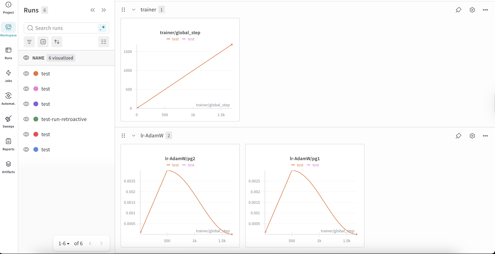
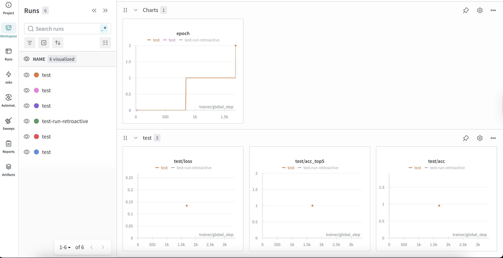
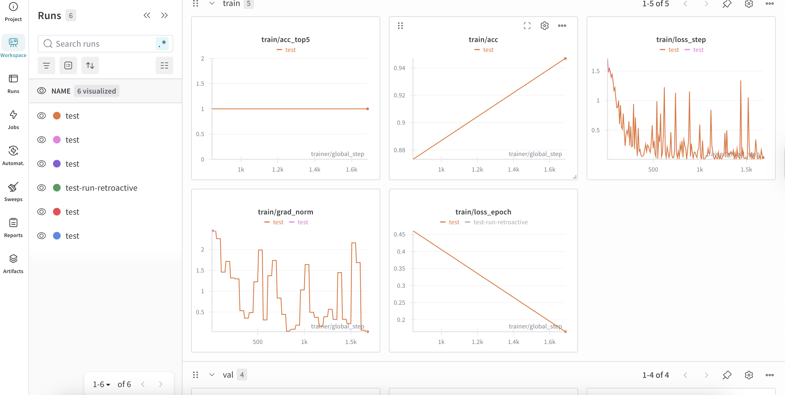
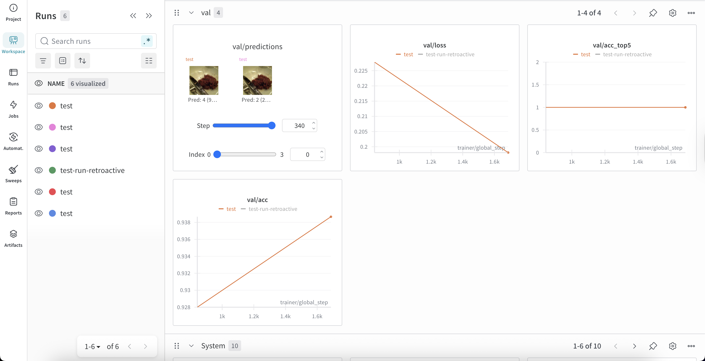
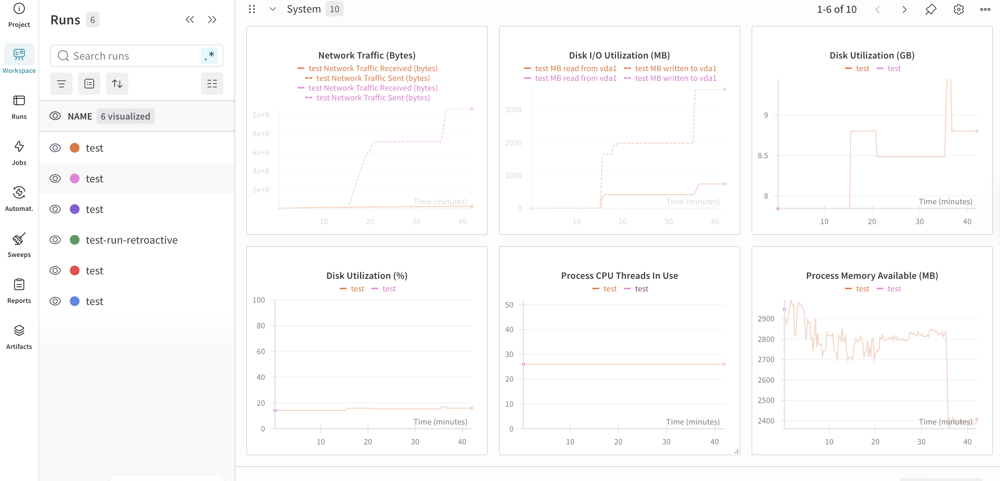
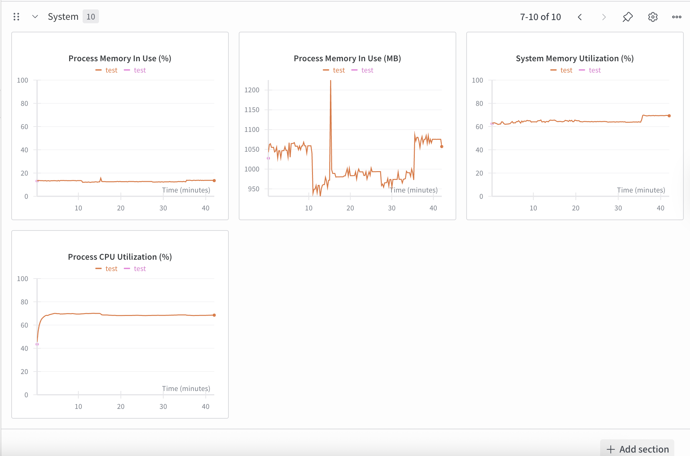
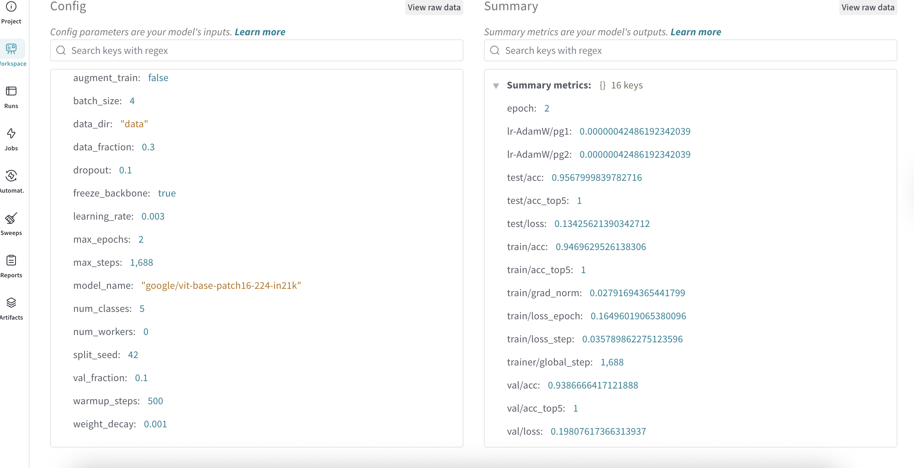
Question 15
Docker is an important tool for creating containerized applications. Explain how you used docker in your
experiments/project? Include how you would run your docker images and include a link to one of your docker files.Recommended answer length: 100-200 words.
Example:
For our project we developed several images: one for training, inference and deployment. For example to run the
training docker image:docker run trainer:latest lr=1e-3 batch_size=64. Link to docker file:Answer:
For our project we developed two Docker images: one for training and one for API inference and deployment. The training Dockerfile sets up the environment with all dependencies, pulls data from DVC, and runs the training script. The API Dockerfile creates a lightweight container for serving the model via FastAPI.
For example, to run the training docker image, we first build it with: docker build -f dockerfiles/train.dockerfile -t mlopsproj-train . Then we can run training with: docker run --rm mlopsproj-train. The container automatically pulls the data via DVC, sets up the environment, and executes the training script. For the API, we build with: docker build -f dockerfiles/api.dockerfile -t mlopsproj-api . and run with: docker run -p 8000:8000 mlopsproj-api to serve the model on port 8000.
Using Docker ensures that our training and deployment environments are identical across different machines and cloud platforms, eliminating the "it works on my machine" problem. This is especially important when training on GCP Compute Engine, as we can use the exact same container that we tested locally.
Link to training dockerfile: https://github.com/NicoELNO/mlopsproj/blob/master/dockerfiles/train.dockerfile
Question 16
When running into bugs while trying to run your experiments, how did you perform debugging? Additionally, did you
try to profile your code or do you think it is already perfect?Recommended answer length: 100-200 words.
Example:
Debugging method was dependent on group member. Some just used ... and others used ... . We did a single profiling
run of our main code at some point that showed ...Answer:
Debugging method was primarily through comprehensive logging and error handling. We set up detailed logging that writes to both console and log files, which helped us track down issues by examining the log output. When errors occurred, we used Python's exception handling with detailed error messages and stack traces to identify where problems happened. We also used print statements and logger.debug() calls for quick debugging of specific issues.
We did profiling runs of our training code using PyTorch Lightning's SimpleProfiler and PyTorchProfiler. The profiling showed that most of the training time was spent in the forward and backward passes during training batches, which is expected for deep learning. We also found that checkpoint saving was taking a noticeable amount of time, which helped us optimize when checkpoints are saved. The profiler output helped us understand the performance bottlenecks and confirmed that the data loading was efficient. While the code is not perfect, profiling helped us identify areas that were working well and areas that could potentially be optimized further, such as reducing checkpoint frequency for faster iteration during development.
Working in the cloud
In the following section we would like to know more about your experience when developing in the cloud.
Question 17
List all the GCP services that you made use of in your project and shortly explain what each service does?
Recommended answer length: 50-200 words.
Example:
We used the following two services: Engine and Bucket. Engine is used for... and Bucket is used for...Answer:
--- question 17 fill here ---
Our project utilizes several GCP services: Compute Engine for running VM instances that execute our model training, Artifact Registry for storing and managing our Docker images, Cloud Storage (GCS) buckets for storing raw image data and DVC files, and Cloud Build for automatically building Docker images when code is pushed to the repository. Compute Engine provides the computational resources needed for training, Artifact Registry ensures our Docker images are versioned and easily accessible, Cloud Storage serves as our data repository, and Cloud Build automates the image building process.
Question 18
The backbone of GCP is the Compute engine. Explained how you made use of this service and what type of VMs
you used?Recommended answer length: 100-200 words.
Example:
We used the compute engine to run our ... . We used instances with the following hardware: ... and we started the
using a custom container: ...Answer:
--- question 18 fill here ---
The backbone of our GCP infrastructure is Compute Engine, which provides the necessary computational resources for our model training. We provisioned a specific VM instance named "mlops" located in the europe-west1-d zone.
Regarding hardware, we utilized the e2-medium machine type. This general-purpose instance features an Intel Broadwell CPU platform and a 10 GB persistent boot disk running Debian 12 Bookworm.
To ensure a portable and consistent environment, we start the training process using a custom Docker container. Our workflow involves building images via Cloud Build and storing them in the Artifact Registry. Specifically, we execute our training by pulling the mlops-train:latest image from our repository and running it directly on the VM.
Question 19
Insert 1-2 images of your GCP bucket, such that we can see what data you have stored in it.
You can take inspiration from this figure.Answer:
{kind=link}
--- question 19 fill here ---
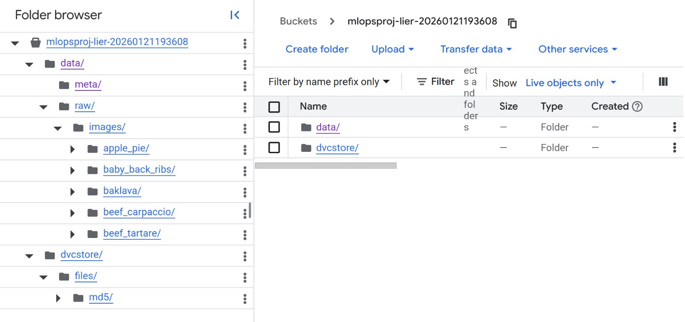
Question 20
Upload 1-2 images of your GCP artifact registry, such that we can see the different docker images that you have
stored. You can take inspiration from this figure. + docker imageAnswer:
{kind=link}
--- question 20 fill here ---
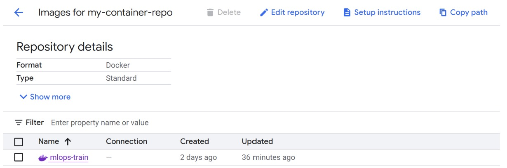
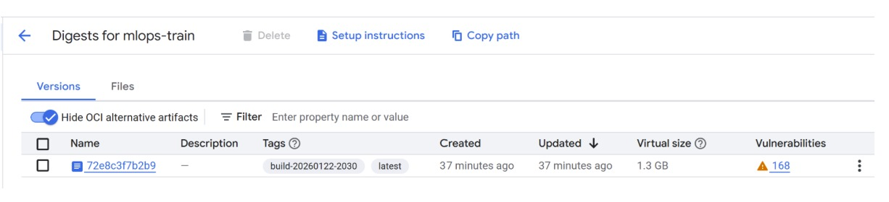
Question 21
Upload 1-2 images of your GCP cloud build history, so we can see the history of the images that have been build in
your project. You can take inspiration from this figure.Answer:
{kind=link}
--- question 21 fill here ---

Question 22
Did you manage to train your model in the cloud using either the Engine or Vertex AI? If yes, explain how you did
it. If not, describe why.Recommended answer length: 100-200 words.
Example:
We managed to train our model in the cloud using the Engine. We did this by ... . The reason we choose the Engine
was because ...Answer:
--- question 22 fill here ---
We successfully managed to train our model in the cloud using Compute Engine. Our process involved a containerized workflow: first, we built our training image using Cloud Build with the command gcloud builds submit --config cloudbuild.yaml. This image was then stored in the Artifact Registry under the repository my-container-repo.
To execute the training, we accessed our e2-medium VM via SSH and pulled the custom container. We started the training process by running: docker run --rm europe-west1-docker.pkg.dev/dtumlops-485016/my-container-repo/mlops-train:latest.
We chose Compute Engine over Vertex AI because it granted us full control over the operating environment and simplified the integration of our existing Docker-based workflow. While Vertex AI offers a unified managed environment, using the Engine allowed us to manage our own VM specs (2 vCPUs, 4 GB RAM) and persistent disks directly, which was more suitable for our current project scale and infrastructure requirements.
Deployment
Question 23
Did you manage to write an API for your model? If yes, explain how you did it and if you did anything special. If
not, explain how you would do it.Recommended answer length: 100-200 words.
Example:
We did manage to write an API for our model. We used FastAPI to do this. We did this by ... . We also added ...
to the API to make it more ...Answer:
We did manage to write an API for our model. We used FastAPI to do this. We did this by creating an API application in api.py that loads our trained Vision Transformer model from a checkpoint at startup using a lifespan context manager. The API provides two prediction endpoints: one that accepts a local file path and another that accepts file uploads via multipart form data, which is more suitable for frontend integration.
We also added several features to the API to make it more robust and user friendly. We included CORS middleware to allow frontend requests from different origins, health check and root endpoints for monitoring, and comprehensive error handling with detailed error messages. The API supports configurable top k predictions, allowing users to request the top 1 to 10 most likely food classes. We also added a classes endpoint that returns all available food categories. The model is loaded once at startup and reused for all requests, which makes inference fast and efficient. All endpoints use Pydantic models for request and response validation, ensuring type safety and automatic API documentation generation.
Question 24
Did you manage to deploy your API, either in locally or cloud? If not, describe why. If yes, describe how and
preferably how you invoke your deployed service?Recommended answer length: 100-200 words.
Example:
For deployment we wrapped our model into application using ... . We first tried locally serving the model, which
worked. Afterwards we deployed it in the cloud, using ... . To invoke the service an user would call
curl -X POST -F "file=@file.json"<weburl>Answer:
For deployment we wrapped our model into an application using FastAPI and uvicorn. We first tried locally serving the model, which worked successfully. To run the API locally, we use: python -m src.mlopsproj.api or uvicorn src.mlopsproj.api:app --host 0.0.0.0 --port 8000. The API runs on localhost port 8000 and loads the model from a checkpoint at startup.
To invoke the service, a user can make requests to the API endpoints. For example, to predict from an uploaded image file, one would call: curl -X POST -F "file=@image.jpg" -F "top_k=5" http://localhost:8000/predict/upload. The API returns a JSON response with the top k predictions, their confidence scores, and the top prediction. We also created a Streamlit frontend that connects to this local API, allowing users to upload images through a web interface and see predictions visually. The frontend communicates with the API running on localhost:8000, making it easy to test and demonstrate the model without needing cloud deployment.
Question 25
Did you perform any functional testing and load testing of your API? If yes, explain how you did it and what
results for the load testing did you get. If not, explain how you would do it.Recommended answer length: 100-200 words.
Example:
For functional testing we used pytest with httpx to test our API endpoints and ensure they returned the correct
responses. For load testing we used locust with 100 concurrent users. The results of the load testing showed that
our API could handle approximately 500 requests per second before the service crashed.Answer:
--- question 25 fill here ---
We implemented both functional testing and load testing for our API. For functional testing, we used pytest with FastAPI's TestClient to test our API endpoints. Our test suite in tests/test_api.py covers health checks, root endpoint, classes endpoint, prediction endpoints with file uploads, error handling for invalid files, and validation of the top_k parameter. The tests use mocked models to ensure fast execution without requiring a full model load.
For load testing, we created a custom load testing script in tests/load_test_api.py using pytest-asyncio and httpx. The script can be run both as a standalone tool (with command-line arguments for URL, number of users, and requests per user) and as pytest test functions. Our load tests simulate multiple concurrent users making requests to the API and measure key metrics including request latency (average, min, max), success rate, and requests per second. The tests automatically skip if the API is not running, making them safe to include in CI/CD pipelines. We can run lightweight tests (2 users, 2 requests each) for quick validation, or heavier load tests (10 users, 10 requests each) marked with the "slow" marker that can be skipped with -m "not slow". This load testing helps us understand the API's capacity, identify bottlenecks, and ensure it can handle production traffic.
Question 26
Did you manage to implement monitoring of your deployed model? If yes, explain how it works. If not, explain how
monitoring would help the longevity of your application.Recommended answer length: 100-200 words.
Example:
We did not manage to implement monitoring. We would like to have monitoring implemented such that over time we could
measure ... and ... that would inform us about this ... behaviour of our application.Answer:
--- question 26 fill here ---
We did not manage to implement comprehensive monitoring of our deployed model. We would like to have monitoring implemented such that over time we could measure key metrics like request latency, error rates, prediction confidence distributions, and system resource usage (CPU, memory, disk). This would inform us about the performance and behavior of our application in production. Monitoring would help us detect issues early, such as model performance degradation, increased error rates, or system resource constraints. It would also enable us to track data drift by monitoring the distribution of input features over time and alert us if the incoming data starts to differ significantly from the training data, which could indicate that the model needs retraining.
Overall discussion of project
In the following section we would like you to think about the general structure of your project.
Question 27
How many credits did you end up using during the project and what service was most expensive? In general what do
you think about working in the cloud?Recommended answer length: 100-200 words.
Example:
Group member 1 used ..., Group member 2 used ..., in total ... credits was spend during development. The service
costing the most was ... due to ... . Working in the cloud was ...Answer:
--- question 27 fill here ---
Since our training data was relatively light and we achieved good results efficiently, we only spent 27.8 DKK in total during the project. The primary cost came from Compute Engine VM instances used for model training. Working in the cloud was beneficial for our project as it allowed us to access more computational resources than we had locally, enabled easy collaboration through shared infrastructure, and provided a consistent environment for training and deployment. The cloud infrastructure also made it straightforward to scale up if needed, though we found that our current setup was sufficient for our project requirements.
Question 28
Did you implement anything extra in your project that is not covered by other questions? Maybe you implemented
a frontend for your API, use extra version control features, a drift detection service, a kubernetes cluster etc.
If yes, explain what you did and why.Recommended answer length: 0-200 words.
Example:
We implemented a frontend for our API. We did this because we wanted to show the user ... . The frontend was
implemented using ...Answer:
--- question 28 fill here ---
We implemented integration with DAGsHub for experiment tracking and model versioning. DAGsHub provided us with a unified platform for managing our ML experiments, tracking metrics, and versioning our models alongside our code. This integration helped us maintain better organization of our experiments and made it easier to compare different model versions and their performance metrics.
Question 29
Include a figure that describes the overall architecture of your system and what services that you make use of.
You can take inspiration from this figure. Additionally, in your own words, explain the
overall steps in figure.Recommended answer length: 200-400 words
Example:
The starting point of the diagram is our local setup, where we integrated ... and ... and ... into our code.
Whenever we commit code and push to GitHub, it auto triggers ... and ... . From there the diagram shows ...Answer:
{kind=link}
--- question 29 fill here ---
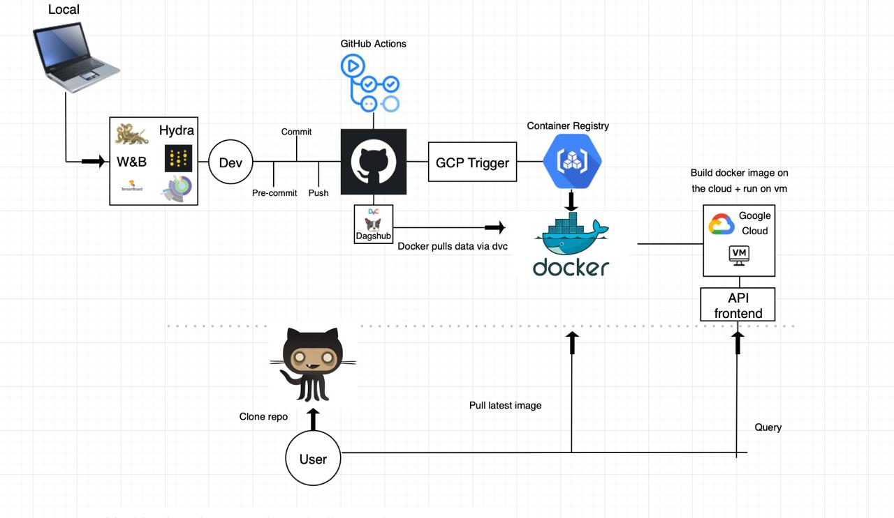
The diagram starts with our local development workflow. On our laptops, we use W&B for experiment tracking, Hydra for configuration management, and TensorBoard for visualizing training progress. This development code flows into our dev environment where we test things locally before pushing to version control.
When we're ready, we commit our code and push it to GitHub. Before the code actually gets pushed, pre-commit hooks run automatically to check code quality. Once the code is on GitHub, GitHub Actions kicks in to run our CI pipeline - things like unit tests and linting checks.
For data management, we use DVC (Data Version Control) integrated with DAGsHub. The actual data files live in cloud storage, but DVC tracks which versions we're using through small metadata files in git. This keeps our repository lightweight while still versioning our datasets.
When we push code to GitHub, it triggers a GCP Cloud Build workflow. This builds our Docker images and pushes them to Google's Container Registry. The Docker containers are set up to pull data via DVC when they run, so they automatically fetch the right dataset version from our remote storage.
The built Docker images get deployed to a Compute Engine VM instance in Google Cloud. The VM runs the containerized application, which could be our training pipeline or our inference API. For serving predictions, we expose a FastAPI frontend that users can query.
Users interact with the system in a few ways: they can clone the repository from GitHub to run things locally, pull the latest Docker image directly to run it themselves, or simply query the deployed API frontend to get predictions without worrying about the infrastructure underneath.
Question 30
Discuss the overall struggles of the project. Where did you spend most time and what did you do to overcome these
challenges?Recommended answer length: 200-400 words.
Example:
The biggest challenges in the project was using ... tool to do ... . The reason for this was ...Answer:
--- question 30 fill here ---
The biggest challenges in the project were related to learning and integrating various cloud and MLOps tools. Hydra configuration management required time to understand the composition patterns and how to properly structure config files. DAGsHub integration took effort to set up correctly with our existing workflow. Google Cloud Platform tools, especially gcloud CLI and Vertex AI, were challenging because the documentation and exercises were not always up to date, requiring us to troubleshoot and adapt to the current API versions.
We overcame these challenges by spending time reading documentation, experimenting with small examples, and helping each other debug issues. We also used online resources and community forums when official documentation was unclear. For GCP specifically, we focused on Compute Engine first (which was more straightforward) before attempting Vertex AI, which helped us build understanding incrementally. The collaborative approach of working together on all parts of the project, while slower, ensured that everyone understood the challenges and solutions, making the learning process more effective.
Question 31
State the individual contributions of each team member. This is required information from DTU, because we need to
make sure all members contributed actively to the project. Additionally, state if/how you have used generative AI
tools in your project.Recommended answer length: 50-300 words.
Example:
Student sXXXXXX was in charge of developing of setting up the initial cookie cutter project and developing of the
docker containers for training our applications.
Student sXXXXXX was in charge of training our models in the cloud and deploying them afterwards.
All members contributed to code by...
We have used ChatGPT to help debug our code. Additionally, we used GitHub Copilot to help write some of our code.
Answer:
--- question 31 fill here ---
All group members contributed equally on all parts of the project, since it was done together. This collaborative approach might not have been the fastest way to complete tasks, but it was the best way for learning the grand scope of the MLOps pipeline. Each member worked on data processing, model development, training, API creation, cloud deployment, and testing, ensuring everyone gained comprehensive understanding of the entire system.
We have used ChatGPT and other generative AI tools to help debug code, understand error messages, and get explanations of complex concepts. Additionally, we used GitHub Copilot to help write boilerplate code and suggest implementations for common patterns. These tools were particularly helpful when working with unfamiliar libraries or when stuck on specific technical issues.